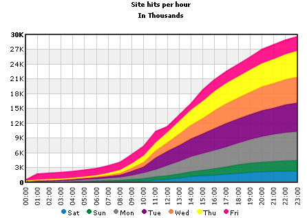

| A 2D Stacked Area chart looks as under: |
|  |
| And, the XML data for this chart can be
listed as under: |
<graph caption='Site hits per hour' subCaption='In
Thousands' numdivlines='9' showgridbg='1' lineThickness='1' animation='1'
showNames='1' showValues='0' numVDivLines='22' yaxisminvalue='0' formatNumberScale='1'
rotateNames='1' areaAlpha='90' showLimits='1' decimalPrecision='1' showAlternateHGridColor='1'
divLineDecimalPrecision='0' limitsDecimalPrecision='0' showAreaBorder='1'>
<categories >
<category name='00:00' />
<category name='01:00' />
<category name='02:00' />
<category name='03:00' />
<category name='04:00' />
<category name='05:00' />
<category name='06:00' />
<category name='07:00' />
<category name='08:00' />
<category name='09:00' />
<category name='10:00' />
<category name='11:00' />
<category name='12:00' />
<category name='13:00' />
<category name='14:00' />
<category name='15:00' />
<category name='16:00' />
<category name='17:00' />
<category name='18:00' />
<category name='19:00' />
<category name='20:00' />
<category name='21:00' />
<category name='22:00' />
<category name='23:00' />
</categories>
<dataset seriesname='Sat' color='0080C0' areaBorderColor='0080C0'>
<set value='36' />
<set value='71'
/>
<set value='85' />
<set value='92' />
<set value='101'
/>
<set value='116' />
<set value='164' />
<set value='180'
/>
<set value='192' />
<set value='262' />
<set value='319'
/>
<set value='489' />
<set value='633' />
<set value='904'
/>
<set value='1215' />
<set value='1358' />
<set value='1482'
/>
<set value='1666' />
<set value='1811' />
<set value='2051'
/>
<set value='2138' />
<set value='2209' />
<set value='2247'
/>
<set value='2301' />
</dataset>
<dataset seriesname='Sun' color='008040' areaBorderColor='008040'>
<set value='23' />
<set value='40'
/>
<set value='62' />
<set value='118' />
<set value='130'
/>
<set value='139' />
<set value='158' />
<set value='233'
/>
<set value='297' />
<set value='379' />
<set value='503'
/>
<set value='687' />
<set value='746' />
<set value='857'
/>
<set value='973' />
<set value='1125' />
<set value='1320'
/>
<set value='1518' />
<set value='1797' />
<set value='1893'
/>
<set value='2010' />
<set value='2057' />
<set value='2166'
/>
<set value='2197' />
</dataset>
<dataset seriesname='Mon' color='808080' areaBorderColor='808080'>
<set value='37' />
<set value='45'
/>
<set value='70' />
<set value='79' />
<set value='168'
/>
<set value='337' />
<set value='374' />
<set value='431'
/>
<set value='543' />
<set value='784' />
<set value='1117'
/>
<set value='1415' />
<set value='2077' />
<set value='2510'
/>
<set value='3025' />
<set value='3383' />
<set value='3711'
/>
<set value='4016' />
<set value='4355' />
<set value='4751'
/>
<set value='5154' />
<set value='5475' />
<set value='5696'
/>
<set value='5801' />
</dataset>
<dataset seriesname='Tue' color='800080' areaBorderColor='800080'>
<set value='54' />
<set value='165'
/>
<set value='175' />
<set value='190' />
<set value='212'
/>
<set value='241' />
<set value='308' />
<set value='401'
/>
<set value='481' />
<set value='851' />
<set value='1250'
/>
<set value='2415' />
<set value='2886' />
<set value='3252'
/>
<set value='3673' />
<set value='4026' />
<set value='4470'
/>
<set value='4813' />
<set value='4961' />
<set value='5086'
/>
<set value='5284' />
<set value='5391' />
<set value='5657'
/>
<set value='5847' />
</dataset>
<dataset seriesname='Wed' color='FF8040' areaBorderColor='FF8040'>
<set value='111' />
<set value='120'
/>
<set value='128' />
<set value='140' />
<set value='146'
/>
<set value='157' />
<set value='190' />
<set value='250'
/>
<set value='399' />
<set value='691' />
<set value='952'
/>
<set value='1448' />
<set value='1771' />
<set value='2316'
/>
<set value='2763' />
<set value='3149' />
<set value='3637'
/>
<set value='4015' />
<set value='4262' />
<set value='4541'
/>
<set value='4837' />
<set value='5016' />
<set value='5133'
/>
<set value='5278' />
</dataset>
<dataset seriesname='Thu' color='FFFF00' areaBorderColor='FFFF00'>
<set value='115' />
<set value='141'
/>
<set value='175' />
<set value='189' />
<set value='208'
/>
<set value='229' />
<set value='252' />
<set value='440'
/>
<set value='608' />
<set value='889' />
<set value='1334'
/>
<set value='1637' />
<set value='2056' />
<set value='2600'
/>
<set value='3070' />
<set value='3451' />
<set value='3918'
/>
<set value='4140' />
<set value='4296' />
<set value='4519'
/>
<set value='4716' />
<set value='4881' />
<set value='5092'
/>
<set value='5249' />
</dataset>
<dataset seriesname='Fri' color='FF0080' areaBorderColor='FF0080'>
<set value='98' />
<set value='1112'
/>
<set value='1192' />
<set value='1219' />
<set value='1264'
/>
<set value='1282' />
<set value='1365' />
<set value='1433'
/>
<set value='1559' />
<set value='1823' />
<set value='1867'
/>
<set value='2198' />
<set value='1112' />
<set value='1192'
/>
<set value='1219' />
<set value='2264' />
<set value='2282'
/>
<set value='2365' />
<set value='2433' />
<set value='2559'
/>
<set value='2823' />
<set value='2867' />
<set value='2867'
/>
<set value='2867' />
</dataset>
</graph>
|
|
|
| The <graph> element for
this chart can have the following properties:
|
| Background Properties
- bgColor="HexColorCode" : This
attribute sets the background color for the chart. You can set any hex
color code as the value of this attribute. Remember that you DO NOT
need to assign a "#" at the beginning of the hex color code.
In fact, whenever you need to provide any hex color code in FusionCharts
XML data document, you do not have to assign the # at the beginning.
- bgAlpha="NumericalValue(0-100)"
: This attribute helps you set the alpha (transparency) of the
graph. This is particularly useful when you need to load the chart in
one of your Flash movies or when you want to set a background image
(.swf) for the chart.
- bgSWF="Path of SWF File" :
This attribute helps you load an external .swf file as a background
for the chart.
Canvas Properties
- canvasBgColor="HexColorCode" :
This attribute helps you set the background color of the canvas.
- canvasBgAlpha="NumericalValue(0-100)"
: This attribute helps you set the alpha (transparency) of the
canvas.
- canvasBorderColor="HexColorCode"
: This attribute helps you set the border color of the canvas.
- canvasBorderThickness="NumericalValue(0-100)"
: This attribute helps you set the border thickness (in pixels) of the
canvas.
Chart and Axis Titles
- caption="String" : This attribute
determines the caption of the chart that would appear at the top of
the chart.
- subCaption="String" : Sub-caption
of the chart
- xAxisName= "String" : x-Axis
text title (if the chart supports axis)
- yAxisName= "String" : y-Axis
text title (if the chart supports axis)
Chart Numerical Limits
- yAxisMinValue="value": This
attribute determines the lower limit of y-axis.
- yAxisMaxValue="value" : This
attribute determines the upper limit of y-axis.
If you don't specify any of the above values, it is automatically calculated
by FusionCharts based on the data provided by you.
Generic Properties
- shownames="1/0" : This attribute
can have either of the two possible values: 1,0. It sets the configuration
whether the x-axis values (for the data sets) will be displayed or not.
By default, this attribute assumes the value 1, which means that the
x-axis names will be displayed.
- showValues="1/0" : This attribute
can have either of the two possible values: 1,0. It sets the configuration
whether the data numerical values will be displayed along with the columns,
bars, lines and the pies. By default, this attribute assumes the value
1, which means that the values will be displayed.
- showLimits="1/0" : Option
whether to show/hide the chart limit textboxes.
- rotateNames="1/0" : Configuration
that sets whether the category name text boxes would be rotated or not.
- animation="1/0" : This attribute
sets whether the animation is to be played or whether the entire chart
would be rendered at one go.
- showLegend="1/0" : This attribute
sets whether the legend would be displayed at the bottom of the chart.
Area Properties
- showAreaBorder="1/0" : Configuration
whether the border over the area would be shown or not.
- areaBorderThickness="Numeric Value"
: If the area border is to be shown, this attribute sets the thickness
(in pixels) of the area border.
- areaBorderColor="Hex Color"
: If the area border is to be shown, this attribute sets the color of
the area border.
- areaAlpha="0-100" : Transparency
of the area fill.
Font Properties
- baseFont="FontName" : This
attribute sets the base font family of the chart font which lies on
the canvas i.e., all the values and the names in the chart which lie
on the canvas will be displayed using the font name provided here.
- baseFontSize="FontSize" :
This attribute sets the base font size of the chart i.e., all the values
and the names in the chart which lie on the canvas will be displayed
using the font size provided here.
- baseFontColor="HexColorCode" :
This attribute sets the base font color of the chart i.e., all the values
and the names in the chart which lie on the canvas will be displayed
using the font color provided here.
- outCnvBaseFont = "FontName"
: This attribute sets the base font family of the chart font which lies
outside the canvas i.e., all the values and the names in the chart which
lie outside the canvas will be displayed using the font name provided
here.
- outCnvBaseFontSze="FontSize"
: This attribute sets the base font size of the chart i.e., all the
values and the names in the chart which lie outside the canvas will
be displayed using the font size provided here.
- outCnvBaseFontColor="HexColorCode":
This attribute sets the base font color of the chart i.e., all the values
and the names in the chart which lie outside the canvas will be displayed
using the font color provided here.
Number Formatting Options
- numberPrefix="$" : Using this
attribute, you could add prefix to all the numbers visible on the graph.
For example, to represent all dollars figure on the chart, you could
specify this attribute to ' $' to show like $40000, $50000.
- numberSuffix="p.a" : Using
this attribute, you could add prefix to all the numbers visible on the
graph. For example, to represent all figure quantified as per annum
on the chart, you could specify this attribute to ' /a' to show like
40000/a, 50000/a.
To use special characters for numberPrefix
or numberSuffix, you'll need to URL Encode
them. That is, suppose you wish to have numberSuffix
as % (like 30%),
you'll need to specify it as under:
numberSuffix='%25'
- formatNumber="1/0" : This
configuration determines whether the numbers displayed on the chart
will be formatted using commas, e.g., 40,000 if formatNumber='1' and
40000 if formatNumber='0 '
- formatNumberScale="1/0" :
Configuration whether to add K (thousands) and M (millions) to a number
after truncating and rounding it - e.g., if formatNumberScale is set
to 1, 10434 would become 1.04K (with decimalPrecision set to 2 places).
Same with numbers in millions - a M will added at the end.
- decimalSeparator="." : This
option helps you specify the character to be used as the decimal separator
in a number.
- thousandSeparator="," : This
option helps you specify the character to be used as the thousands separator
in a number.
- decimalPrecision="2" : Number
of decimal places to which all numbers on the chart would be rounded
to.
- divLineDecimalPrecision="2":
Number of decimal places to which all divisional line (horizontal) values
on the chart would be rounded to.
- limitsDecimalPrecision="2" :
Number of decimal places to which upper and lower limit values on the
chart would be rounded to.
Zero Plane
The zero plane is a simple plane (line) that signifies the 0
position on the chart. If there are no negative numbers on the chart,
you won't see a visible zero plane.
- zeroPlaneThickness="Numeric Value"
: Thickness (in pixels) of the line indicating the zero plane.
- zeroPlaneColor="Hex Code" :
The intended color for the zero plane.
- zeroPlaneAlpha="Numerical Value 0-100"
: The intended transparency for the zero plane.
Divisional Lines (Horizontal)
Divisional Lines are horizontal or vertical lines running through the
canvas. Each divisional line signfies a smaller unit of the entire axis
thus aiding the users in interpreting the chart.
- numdivlines="NumericalValue"
: This attribute sets the number of divisional lines to be drawn.
- divlinecolor="HexColorCode"
: The color of grid divisional line.
- divLineThickness="NumericalValue"
: Thickness (in pixels) of the grid divisional line.
- divLineAlpha="NumericalValue0-100"
: Alpha (transparency) of the grid divisional line.
- showDivLineValue="1/0" :
Option to show/hide the textual value of the divisional line.
- showAlternateHGridColor="1/0"
: Option on whether to show alternate colored horizontal grid bands.
- alternateHGridColor="HexColorCode"
: Color of the alternate horizontal grid bands.
- alternateHGridAlpha="NumericalValue0-100"
: Alpha (transparency) of the alternate horizontal grid bands.
Divisional Lines (Vertical)
- numVDivLines="NumericalValue"
: Sets the number of vertical divisional lines to be drawn.
- vDivlinecolor="HexColorCode"
: Color of vertical grid divisional line.
- vDivLineThickness="NumericalValue"
: Thickness (in pixels) of the line
- vDivLineAlpha="NumericalValue0-100"
: Alpha (transparency) of the line.
- showAlternateVGridColor="1/0"
: Option on whether to show alternate colored vertical grid bands.
- alternateVGridColor="HexColorCode"
: Color of the alternate vertical grid bands.
- alternateVGridAlpha="NumericalValue0-100"
: Alpha (transparency) of the alternate vertical grid bands.
Hover Caption Properties
The hover caption is the tool tip which shows up when the user moves
his mouse over a particular data item (column, line, pie, bar etc.).
- showhovercap="1/0" : Option
whether to show/hide hover caption box.
- hoverCapBgColor="HexColorCode"
: Background color of the hover caption box.
- hoverCapBorderColor="HexColorCode"
: Border color of the hover caption box.
- hoverCapSepChar="Char" :
The character specified as the value of this attribute separates the
name and value displayed in the hover caption box.
Chart Margins
Chart Margins refers to the empty space left on the top, bottom, left
and right of the chart. That means, FusionCharts would leave that much
amount of empty space on the chart, before it starts plotting.
- chartLeftMargin="Numerical Value (in pixels)"
: Space to be left unplotted on the left side of the chart.
- chartRightMargin="Numerical Value (in
pixels)" : Empty space to be left on the right side of the
chart
- chartTopMargin="Numerical Value (in pixels)"
: Empty space to be left on the top of the chart.
- chartBottomMargin="Numerical Value (in
pixels)" : Empty space to be left at the bottom of the chart.
|
| |
|
The <categories> element can have the following
attributes:
- font="font face" : Font face
of the category names.
- fontSize="Numeric value"
: Font size of the category names.
- fontColor="Hex Color" : Font
color of the category names.
|
|
| Each <category> element
represents a x-axis data label. You can specify the following attributes
for <category> element: |
- name="String" : This attribute
determines the category name which would be displayed on the x-axis
as the data label. In our example, we've specified the category names
as names of six months (in abbreviated format).
- hoverText="String" : Sometimes,
you might just want to show the abbreviated names on the x-axis (to
avoid cluttering or to make the chart look more legible). However, you
still have the option of showing the full name as tool tip using this
attribute. Like, in our example, we're showing the abbreviated form
"Jan" on our x-axis, but the full word "January"
is shown as the tool tip.
- showName="1/0" : This attribute
can either the value of 0 or 1. A value of 1 indicates that this data
label/category name will be displayed on the chart whereas 0 indicates
it won't be displayed. This attribute is particular useful when you
want to show/hide names of alternate data items or say every x (th)
data item.
|
|
|
The following attributes can be defined for the <dataset>
element.
- seriesName="String" : This
attribute denotes the name of the dataset series. That is, if we're
plotting a monthly sales analysis for the years 2004 and 2003, the seriesName
for the first dataset would be 2004 and that of the second would be
2003. This is the value that would be shown in the legend.
- color="Hex Color" : This attribute
sets the color using which that particular set of data would be drawn.
- showValues="1/0": This attribute
sets the configuration whether the values (for this particular data
set) will be shown alongside the data sets. You can set this value for
individual datasets to highlight the most prominent data.
- alpha="0-100": This attribute
sets the alpha (transparency) of the entire dataset.
You can also later specify alpha at the
<set> level to over ride this value. For example,
<dataset seriesName='Sales – 2001' color='FFF123'
alpha='80' ..>
<set value='1'>
<set value='2'>
<set value='3' alpha='90'>
</dataset>
In the above data, the <set> elements
with the value 1 and 2 will have an alpha
of 80 on the graph, whereas the one containing 3 as its value will have
alpha as 90.
Dataset specific area properties
The area properties below would be applicable for anchor of this
particular dataset only.
- showAreaBorder="1/0" : Configuration
whether the border over the area would be shown or not.
- areaBorderThickness="Numeric Value"
: If the area border is to be shown, this attribute sets the thickness
(in pixels) of the area border.
- areaBorderColor="Hex Color"
: If the area border is to be shown, this attribute sets the color of
the area border.
- areaAlpha="0-100" : Transparency
of the area fill.
|
|
We now move on to the <set>
element which is a child element of the <dataset>
element and determines a set of data which would appear on the graph.
A <set> element looks as under:
<set value="54" link="ShowDetails.asp%3FMonth=Jan"
alpha="80" />
Now let's study the the possible attributes of the <set>
element: |
- value="NumericalValue"
Example: <set name='Jan' value='12345' ...>
This attribute determines the numerical value for the set of data according
to which the chart would be built for the concerned set of data.
- link="URL"
Example: <set … link='ShowDetails.asp%3FMonth=Jan'
...>
This attribute defines the hotspots in your graph. The hotspots are
links over the data sets. Please note that you'll need to URL Encode
all the special characters (like ? and &) present in the link.All
the server side scripting languages provide a generic function to URL
Encode any string - like in ASP and ASP.NET, we've Server.URLEncode(strURL)
and so on.
To open a link in a new window, just put n-
in front of the link e.g., link="n-ShowDetails.asp%3FMonth=Jan".
- alpha="Numerical Value 0-100"
Example: <set ... alpha='100' ...>
This attribute determines the transparency of a data set. The range
for this attribute is 0 to 100. 0 means complete transparency (the data
set won’t be shown on the graph) and 100 means opaque. This option
is useful when you want to highlight a particular set of data. This
value here overrides the value specified at dataset
level.
At the end of the <set> element, you would find a "/"
which signals that it has no more child element
|
| |
|
Using the <trendLines>
element (and child elements), you can define trend lines on the charts.
Trend lines are the horizontal lines spanning the chart canvas that aid
in interpretation of data with respect to some previous pre-determined
figure. For each trend line on the chart, you need to define a <line>
element as under:
<line startValue='89.5' endValue='98' color='FF0000'
displayvalue='Roll. Avg.' thickness='2' alpha='100' isTrendZone='0' showOnTop='1'/>
The <line> element can have the following
attributes:
- startValue='NumericalValue': The starting
y-axis value for the trendline. Say, if you want to plot a slanted trendline
from value 102 to 109, the startValue would 102.
- endValue='NumericalValue': The ending
y-axis value for the trendline. Say, if you want to plot a slanted trendline
from value 102 to 109, the endValue would 109. If you do not specify
a value for endValue, it would automatically assume the same value as
startValue.
- color='HexCode' : Color of the trend
line and its associated text.
- displayValue='StringValue' : If you
want to display a string caption for the trend line by its side, you
can use this attribute. Example: displayValue='Last
Month High'. When you don't supply this attribute, it automatically
takes the value of startValue.
- thickness='NumericalValue' : Thickness
of the trend line
- isTrendZone='1/0': Whether
the trend would display a line, or a zone (filled colored rectangle).
- showOnTop='1/0': Whether the trend line/zone
would be displayed over other elements of the chart.
- alpha='NumericalValue0-100': Alpha (transparency)
of the trend line
|
| At the end of the data file, you would find a </graph>
element, which signals the end of the data file for the graph. |
| |